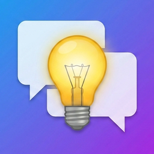

Conversation Starter Questions
Conversation Starter Questions is a simple and easy-to-use app for finding conversation starter questions and icebreaker topics.
Choose a category, view a question, and start a natural conversation in seconds.
This app is useful for dates, friends, family gatherings, parties, work icebreakers, classrooms, road trips, couples, team building, and anyone who wants an easy topic to talk about.
You can save your favorite questions, review recently viewed questions, and unlock extra conversation starter questions with an optional in-app purchase.
Features
- Get conversation starter questions quickly
- Choose from multiple conversation categories
- View random questions by category
- Save favorite questions
- Review question history
- Useful for dates, friends, family, parties, work, classrooms, road trips, couples, and team building
- Simple and clean design
- Optional extra question pack
- Optional ad removal
Frequently Asked Questions
-
Q: What does this app do?
A: Conversation Starter Questions helps you find questions and topics to start or continue a conversation.
-
Q: Who is this app for?
A: This app is for anyone who wants easy conversation ideas, including people on dates, friends, couples, families, teachers, students, coworkers, teams, and party hosts.
-
Q: How do I use the app?
A: Choose a category, read the displayed question, and tap the next button to see another question.
-
Q: What categories are included?
A: The app includes categories such as fun, friends, first date, party, work, family, deep questions, couples, team building, classroom, road trip, and would you rather.
-
Q: Can I save questions I like?
A: Yes. You can save favorite questions and view them later from the Favorites screen.
-
Q: Can I see questions I viewed before?
A: Yes. The app keeps a simple question history so you can review recently viewed questions.
-
Q: Does the app require an account?
A: No. The app does not require account registration or login.
-
Q: Is this app a messaging or social networking app?
A: No. This app does not provide chat, messaging, posting, profiles, or social networking features. It simply displays conversation starter questions.
-
Q: Can I unlock more questions?
A: Yes. You can unlock extra conversation starter questions with an optional in-app purchase.
-
Q: Can I remove ads?
A: Yes. You can remove banner ads with an optional in-app purchase.
-
Q: Where is my data stored?
A: Favorites and question history are stored locally on your device.
-
Q: Do I need an internet connection?
A: Basic question browsing works offline. An internet connection may be required to load ads or complete in-app purchases.
📩 Contact
If you have any questions or encounter issues, feel free to contact us:
← Back to Support Center